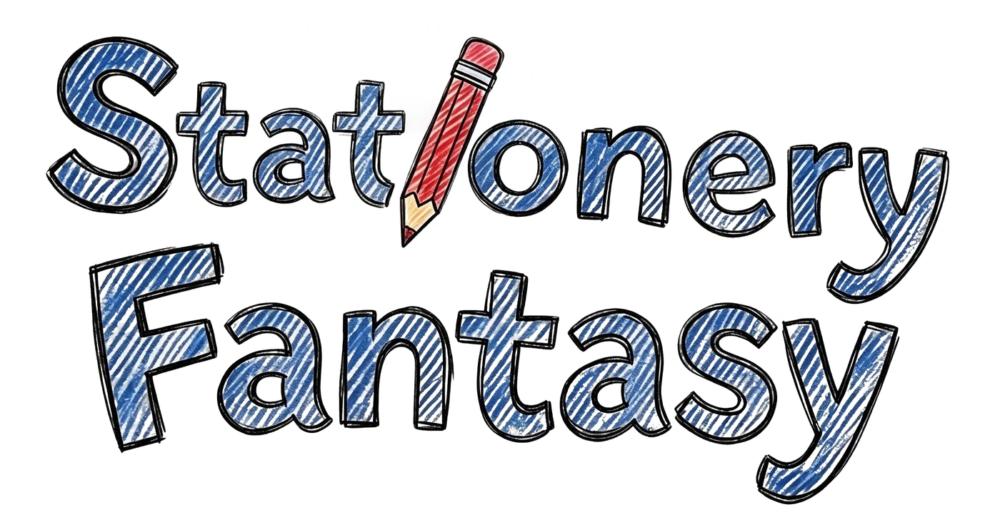

In this three-level side-scrolling shoot ’em up, you fly a plane built from stationery and use its parts as weapons. Defeated enemies take on new forms: an eraser attack, for example, turns a tangle of anxiety into a lightbulb.
The three levels follow a child from correcting mistakes on tests to confronting self-doubt and outside expectations.
Platform PC (Unity)
Development Apr–Jun 2026
Type Independent project